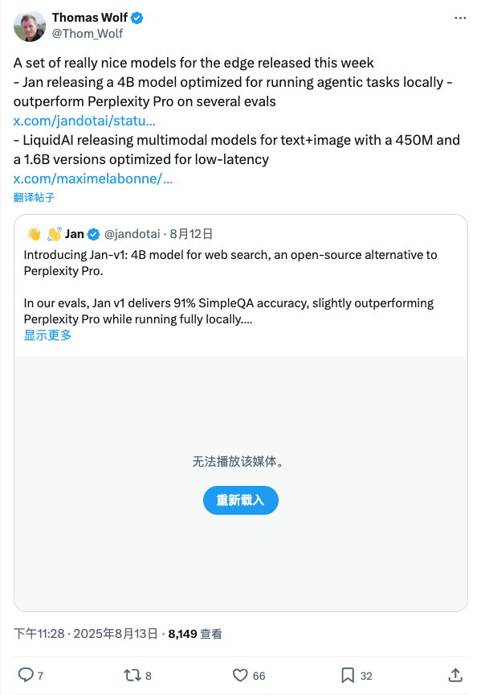
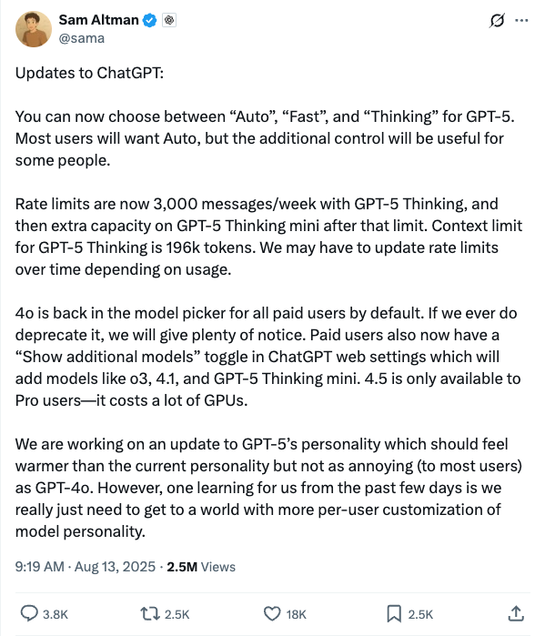
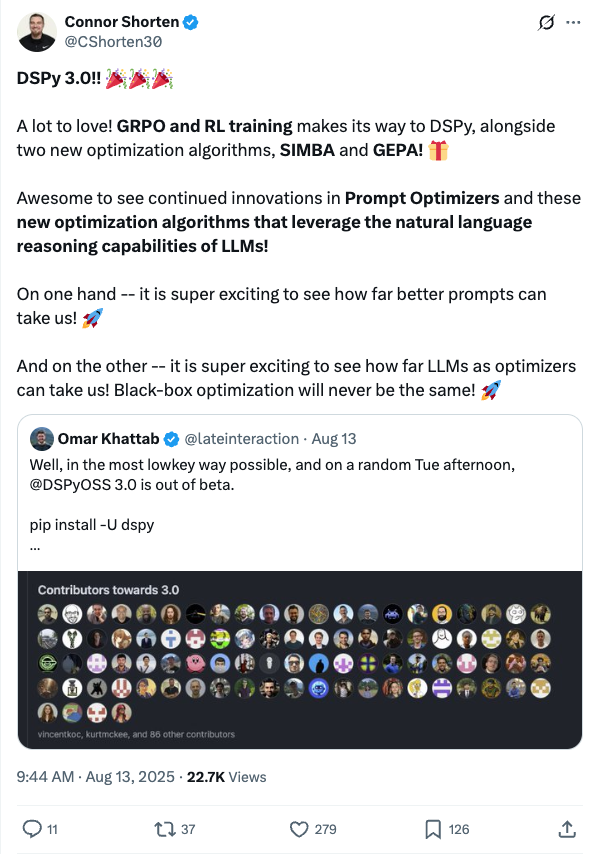
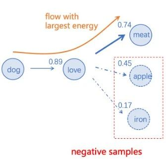
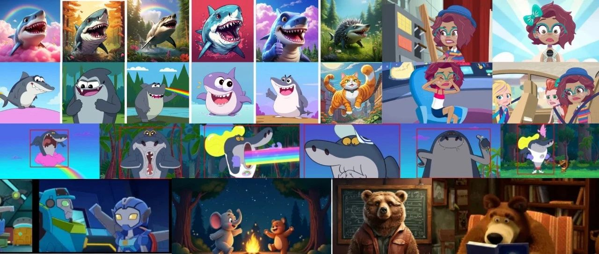
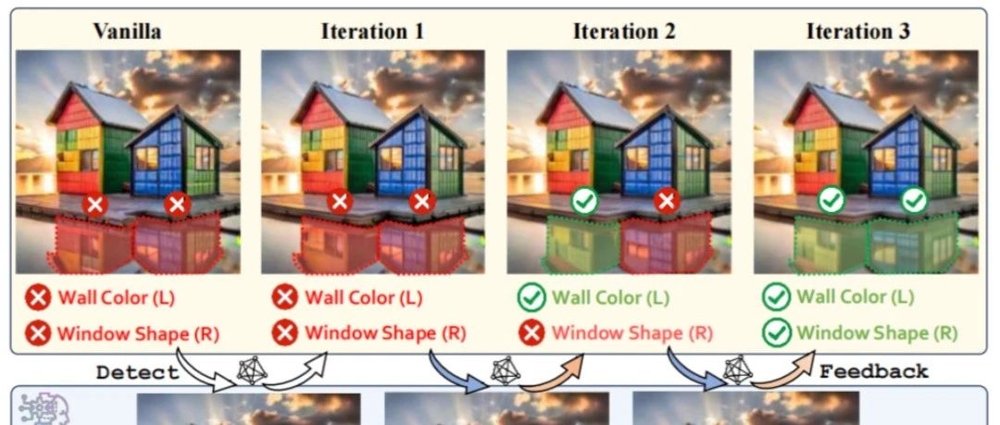

Twitter
fchollet_Warning Against Generative AI's Information Pollution and Value Erosion
Published: 2025-08-13T12:12:19.000Z

François Chollet argues that Generative AI is not merely a technological advancement but an informational pollutant and cognitive smog, corrupting every aspect of the internet. He likens it to digital acid rain, silently eroding the value of all information, making images lose their grip on reality and articles become soulless permutations of data. Chollet contends that this is not just content creation but a flattening of the vibrant ecosystem of human expression, transforming rich ideas into a uniform, gray slurry, contaminating data streams, and cheapening the value of human thought.
Thom_Wolf_New Edge AI Models: Jan's 4B Local Agent Model & LiquidAI's Multimodal Models
Published: 2025-08-13T15:28:00.000Z

Thomas Wolf highlighted new edge AI models released this week. Jan introduced a 4B model optimized for local agentic tasks, outperforming Perplexity Pro in some evaluations, suitable for web search and deep research. Additionally, LiquidAI launched 450M and 1.6B multimodal (text+image) models, specifically optimized for low-latency operations. These developments aim to advance AI capabilities on edge devices.
sama_ChatGPT Updates: GPT-5 Options, Rate Limits, and Model Personalization
Published: 2025-08-13T01:19:02.000Z

Sam Altman announced significant ChatGPT updates, introducing "Auto," "Fast," and "Thinking" modes for GPT-5, with most users preferring "Auto." Key changes include revised rate limits for GPT-5 Thinking (3,000 messages/week) and an expanded 196k token context window. GPT-4o is now back for all paid users, who also gain a "Show additional models" toggle for options like o3 and 4.1. GPT-4.5 remains exclusive to Pro users due to high GPU demands. OpenAI is also refining GPT-5's personality for a warmer feel and aims for greater per-user model customization.
CShorten30_DSPy 3.0 Released with GRPO, RL Training, and New Optimization Algorithms
Published: 2025-08-13T01:44:49.000Z

Connor Shorten announced the official release of DSPy 3.0, highlighting its new features including GRPO and RL training, alongside two novel optimization algorithms, SIMBA and GEPA. The tweet emphasizes the continuous innovation in prompt optimizers and the exciting potential of leveraging large language models as optimizers, predicting a transformation in black-box optimization. DSPy 3.0's release marks its transition from beta.
elonmusk_Grok Imagine to Simplify Infinite Video Creation
Published: 2025-08-13T19:19:45.000Z

Elon Musk announced that Grok Imagine will significantly simplify the process of creating videos of any length, with further optimizations planned in the coming weeks and months. Previously, Tetsuo AI demonstrated how Grok 4 Imagine can create seamless, infinite-length videos by screenshotting the last frame and generating a new video from it. This development signals a major breakthrough in AI video generation technology, offering users more convenient creative tools.
_philschmid_ Introduces LiveMCPBench: A New Benchmark for Evaluating LLM Tool Usage
Published: 2025-08-13T12:04:20.000Z

_philschmid_ introduced LiveMCPBench, a new benchmark evaluating large language models' ability to select and utilize tools for real-world tasks. Comprising 527 tools and 95 multi-step tasks, the benchmark reveals most models struggle with tool retrieval and utilization, achieving only 30-50% success rates, with Claude Sonnet 4 leading. Key findings include difficulty in finding correct tools as a primary error and a tendency for models to rely on single tools. The study also validated LLM-as-a-Judge as a reliable evaluation method.
wechat
Beyond Transformer: Shanghai Jiao Tong University Unveils First Brain-Inspired Large Model, Reshaping Machine Learning Paradigm
Published: 2025-08-13T16:03:50.000Z

Shanghai Jiao Tong University's Professor Zhao Hai's team has unveiled BriLLM, the first large language model that macroscopically simulates the global mechanisms of the human brain, aiming to overcome the limitations of traditional Transformer architecture. Inspired by brain science, BriLLM employs the SiFu (Signal Fully-connected Flowing) learning mechanism, addressing three major drawbacks of Transformers: high computational demands, black-box interpretability, and limited context scale. This novel model offers infinite context processing capabilities and 100% full-model interpretability by simulating human brain information flow through dynamic signal propagation, significantly reducing parameter count. Although the initial models have relatively small parameters (2B/1B), they have validated the new architectural pipeline, paving the way for future brain-inspired models at the hundred-billion parameter scale, as well as advancements in multimodal and embodied AI. BriLLM is poised to redefine the machine learning paradigm by offering a more efficient, transparent, and scalable approach to artificial intelligence.
Lay2Story: Extending Diffusion Transformers for Layout-Togglable Story Generation
Published: 2025-08-13T16:03:50.000Z

JD.com has released Lay2Story-1M, a million-scale high-definition dataset specifically designed for layout-togglable story generation, featuring approximately one million images at 720p or higher resolution with detailed subject annotations. Building upon this, the research team introduced the Lay2Story model, an extension of the Diffusion Transformers (DiTs) architecture. This model incorporates global and subject branches, utilizing masked self-attention, cross-attention, and 3D self-attention mechanisms to achieve pixel-level precise control and maintain character consistency within generated stories. Experimental results demonstrate that Lay2Story significantly outperforms existing baseline methods in terms of character consistency, semantic relevance, and aesthetic quality of images. Even without explicit layout conditions, the model exhibits strong competitiveness, establishing a new paradigm for high-quality story generation.
LLaDA-MedV: First Large Language Diffusion Model for Biomedical Image Understanding Achieves SOTA on Three VQA Benchmarks
Published: 2025-08-13T14:12:05.000Z

LLaDA-MedV introduces the first masked diffusion architecture for biomedical vision-language tasks, establishing itself as a pioneering large language diffusion model in this domain. Through a sophisticated three-stage instruction tuning process, LLaDA-MedV significantly outperforms LLaVA-Med and LLaDA-V in open-ended biomedical visual dialogue tasks. It also achieves new state-of-the-art accuracy on three major biomedical visual question answering benchmarks: VQA-RAD, SLAKE, and PathVQA. Unlike conventional autoregressive models, LLaDA-MedV leverages its diffusion-based generation mechanism to explicitly control and produce longer, more informative responses, effectively addressing the limitations of insufficient answer length and detail often seen in autoregressive approaches. Although its per-word generation time is comparatively longer, the substantial improvement in output quality is deemed acceptable, marking a significant advancement in biomedical image understanding.
From Defender to Guide: SJTU & Shanghai AI Lab Propose LEGION, Not Just an AI Image Forgery Buster, But Also a Catalyst for Generative Model Evolution?
Published: 2025-08-13T14:12:05.000Z

Shanghai Jiao Tong University and Shanghai AI Lab have jointly introduced LEGION, a groundbreaking multimodal large model specifically designed to address the critical and growing issue of AI-generated image forgery detection. This integrated framework excels in its ability to detect, precisely locate, and comprehensively explain subtle artifacts within AI-generated images, thereby effectively combating the escalating misuse of AI imagery and the resulting public trust crisis. A pivotal innovation of LEGION lies in its dual functionality: beyond serving as a robust forgery detection tool, it uniquely leverages its sophisticated detection capabilities to actively enhance and refine generative models. By providing actionable insights for prompt optimization or enabling targeted local repairs of identified imperfections, LEGION significantly improves the overall quality and realism of generated images. This novel approach establishes a symbiotic relationship between detection and generation, transforming the traditional adversarial dynamic into a unified and mutually beneficial framework. It not only safeguards image integrity and authenticity but also actively propels the continuous evolution of advanced generative AI technology, offering a promising new direction for both image security and cutting-edge content creation.
The Policy Cliff: A Theoretical Analysis of Reward-Policy Maps in Large Language Models
Published: 2025-08-13T04:47:29.000Z

Dr. Xu Xingcheng from Shanghai AI Lab's latest research unveils the "Policy Cliff" crisis in reinforcement learning (RL) for large language models (LLMs). This study provides the first mathematical explanation for why LLM behaviors are fragile, prone to "deceptive alignment," or "loss of control." The paper highlights a discontinuity in the mapping from rewards to optimal AI policies, meaning minor changes in the reward function can lead to drastic shifts in model strategy. This phenomenon stems from the degeneracy of optimal policies and the incompleteness of reward functions. The theory unifies explanations for various alignment failures, such as model "cheating" or "instruction disobedience," and underscores the critical role of entropy regularization in restoring mapping continuity. This work offers a new theoretical foundation for AI alignment, moving it from empirical "alchemy" towards rigorous science, with profound implications for building safe and controllable general artificial intelligence.
Large Model Training Breakthrough: "Asymmetric" Training Teaches AI Self-Reflection, Zero Inference Overhead
Published: 2025-08-13T04:14:16.000Z
ByteDance team introduces an innovative large language model training method called Post-Completion Learning (PCL), pioneering an "asymmetric training-inference" paradigm. This approach enables models to engage in self-reflection and evaluation during the training phase, yet only output final answers during inference, fully internalizing the reflective capability and incurring zero additional inference overhead. PCL leverages white-box reinforcement learning to teach models proactive self-assessment, combined with a unified SFT+RL hybrid training framework, significantly enhancing both output quality and self-evaluation abilities. Experimental results demonstrate that PCL effectively improves performance in mathematical and logical reasoning while maintaining inference efficiency. This breakthrough opens a new, cost-efficient technical path for large language model training, poised to become a standard practice in the future.
GitHub
FastAPI-MCP
Published: 2025-08-10T09:07:00Z

FastAPI-MCP is an innovative Python library designed to seamlessly expose FastAPI API endpoints as Model Context Protocol (MCP) tools, complete with built-in authentication. This project adopts a FastAPI-native approach, distinguishing itself from mere OpenAPI converters, and supports zero or minimal configuration. It automatically preserves the schemas of request and response models, as well as Swagger documentation. Key advantages include efficient communication via FastAPI's ASGI interface and flexible deployment options, allowing it to function either as an extension to an existing FastAPI application or as a standalone service. By offering native dependency management and a unified infrastructure, FastAPI-MCP significantly streamlines the integration of existing FastAPI services into the MCP ecosystem, making it particularly suitable for developing and managing AI-powered tools.
Jan - Local AI Assistant
Published: 2025-08-13T17:24:20Z

Jan is a powerful local AI assistant designed to run Large Language Models (LLMs) 100% offline directly on user devices, ensuring complete control over data and enhanced privacy. It empowers users to effortlessly download and execute a variety of popular LLMs, such as Llama and Gemma, sourced from HuggingFace. Beyond local capabilities, Jan also supports seamless integration with leading cloud AI services like OpenAI, Anthropic, Mistral, and Groq. Key functionalities include the creation of specialized custom AI assistants tailored for specific tasks and the provision of an OpenAI-compatible API server, enabling other applications to interact with local models. This makes Jan an ideal solution for individuals and enterprises prioritizing localized, high-privacy AI interactions. The project boasts broad compatibility, supporting Windows, macOS, and Linux platforms, and offers flexible options for building the application directly from source code.
TARS: Multimodal AI Agent Stack
Published: 2025-08-13T23:22:27Z

TARS is a comprehensive multimodal AI Agent stack, featuring two core projects: Agent TARS and UI-TARS Desktop. Agent TARS empowers users by bringing advanced GUI Agent and Vision capabilities directly to terminals, computers, and browsers. It facilitates a human-like task completion workflow through its intuitive CLI and Web UI, ensuring seamless integration with diverse real-world tools via its MCP framework. Concurrently, UI-TARS Desktop delivers a native GUI Agent desktop application, leveraging the UI-TARS model. This application supports both local and remote computer and browser operations, offering robust features such as natural language control, precise visual recognition, accurate mouse and keyboard manipulation, and broad cross-platform compatibility. TARS aims to significantly elevate user experience and automation efficiency across various digital environments.
GPT4All
Published: 2025-05-27T19:46:52Z

GPT4All is an open-source project designed to enable large language models (LLMs) to run privately on everyday desktops and laptops, eliminating the need for API calls or dedicated GPUs. It offers both a desktop application and a Python client, supporting DeepSeek R1 distilled models, GGUF format, and Nomic Vulkan for GPU inference. The project focuses on private data processing through local LLM deployment and integrates with tools like Langchain, providing a convenient and efficient local AI solution for individual users and developers.
POML: Prompt Orchestration Markup Language
Published: 2025-08-14T02:52:49Z

POML (Prompt Orchestration Markup Language) is a novel markup language designed to bring structure, maintainability, and versatility to advanced prompt engineering for Large Language Models (LLMs). It addresses common challenges in prompt development, such as lack of structure, complex data integration, and format sensitivity, by employing an HTML-like syntax with semantic components, comprehensive data handling capabilities (supporting documents, tables, images), a decoupled styling system, and an integrated templating engine. POML empowers developers to create more sophisticated and reliable LLM applications, further supported by a rich development toolkit including a VS Code extension and multi-language SDKs.
üìí Fine-tuning Notebooks
Published: 2025-08-13T14:49:13Z

This GitHub repository, part of the Unsloth AI project, provides an extensive collection of fine-tuning notebooks designed to streamline and accelerate the process of adapting various large language models (LLMs) and multimodal AI models. It features comprehensive support for popular models like Gemma, Qwen, Llama, and Mistral, offering guided workflows for data preparation, efficient model training, thorough evaluation, and seamless model saving. These resources are readily accessible and optimized for execution on widely used cloud platforms such as Google Colab and Kaggle. The project categorizes notebooks by model type, including conversational, vision, text-to-speech (TTS), and GRPO models, alongside specific use-case examples like text classification and tool calling. By offering such detailed and platform-specific guides, Unsloth AI significantly lowers the technical barrier, empowering a broader range of users to effectively customize and optimize advanced AI models for their specific applications.
huggingface
OpenCUA: Open Foundations for Computer-Use Agents
Published: 2025-08-12T17:52:32.000Z

Vision-language models have demonstrated impressive capabilities as
computer-use agents (CUAs) capable of automating diverse computer tasks. As
their commercial potential grows, critical details of the most capable CUA
systems remain closed. As these agents will increasingly mediate digital
interactions and execute consequential decisions on our behalf, the research
community needs access to open CUA frameworks to study their capabilities,
limitations, and risks. To bridge this gap, we propose OpenCUA, a comprehensive
open-source framework for scaling CUA data and foundation models. Our framework
consists of: (1) an annotation infrastructure that seamlessly captures human
computer-use demonstrations; (2) AgentNet, the first large-scale computer-use
task dataset spanning 3 operating systems and 200+ applications and websites;
(3) a scalable pipeline that transforms demonstrations into state-action pairs
with reflective long Chain-of-Thought reasoning that sustain robust performance
gains as data scales. Our end-to-end agent models demonstrate strong
performance across CUA benchmarks. In particular, OpenCUA-32B achieves an
average success rate of 34.8% on OSWorld-Verified, establishing a new
state-of-the-art (SOTA) among open-source models and surpassing OpenAI CUA
(GPT-4o). Further analysis confirms that our approach generalizes well across
domains and benefits significantly from increased test-time computation. We
release our annotation tool, datasets, code, and models to build open
foundations for further CUA research.
WebWatcher: Breaking New Frontier of Vision-Language Deep Research Agent
Published: 2025-08-07T18:03:50.000Z

Web agents such as Deep Research have demonstrated superhuman cognitive
abilities, capable of solving highly challenging information-seeking problems.
However, most research remains primarily text-centric, overlooking visual
information in the real world. This makes multimodal Deep Research highly
challenging, as such agents require much stronger reasoning abilities in
perception, logic, knowledge, and the use of more sophisticated tools compared
to text-based agents. To address this limitation, we introduce WebWatcher, a
multi-modal Agent for Deep Research equipped with enhanced visual-language
reasoning capabilities. It leverages high-quality synthetic multimodal
trajectories for efficient cold start training, utilizes various tools for deep
reasoning, and further enhances generalization through reinforcement learning.
To better evaluate the capabilities of multimodal agents, we propose
BrowseComp-VL, a benchmark with BrowseComp-style that requires complex
information retrieval involving both visual and textual information.
Experimental results show that WebWatcher significantly outperforms proprietary
baseline, RAG workflow and open-source agents in four challenging VQA
benchmarks, which paves the way for solving complex multimodal
information-seeking tasks.
StableAvatar: Infinite-Length Audio-Driven Avatar Video Generation
Published: 2025-08-11T17:58:24.000Z

Current diffusion models for audio-driven avatar video generation struggle to
synthesize long videos with natural audio synchronization and identity
consistency. This paper presents StableAvatar, the first end-to-end video
diffusion transformer that synthesizes infinite-length high-quality videos
without post-processing. Conditioned on a reference image and audio,
StableAvatar integrates tailored training and inference modules to enable
infinite-length video generation. We observe that the main reason preventing
existing models from generating long videos lies in their audio modeling. They
typically rely on third-party off-the-shelf extractors to obtain audio
embeddings, which are then directly injected into the diffusion model via
cross-attention. Since current diffusion backbones lack any audio-related
priors, this approach causes severe latent distribution error accumulation
across video clips, leading the latent distribution of subsequent segments to
drift away from the optimal distribution gradually. To address this,
StableAvatar introduces a novel Time-step-aware Audio Adapter that prevents
error accumulation via time-step-aware modulation. During inference, we propose
a novel Audio Native Guidance Mechanism to further enhance the audio
synchronization by leveraging the diffusion's own evolving joint audio-latent
prediction as a dynamic guidance signal. To enhance the smoothness of the
infinite-length videos, we introduce a Dynamic Weighted Sliding-window Strategy
that fuses latent over time. Experiments on benchmarks show the effectiveness
of StableAvatar both qualitatively and quantitatively.
AutoCodeBench: Large Language Models are Automatic Code Benchmark
Generators
Published: 2025-08-12T17:29:20.000Z

Large Language Models (LLMs) have demonstrated remarkable capabilities across
various domains, with code generation emerging as a key area of focus. While
numerous benchmarks have been proposed to evaluate their code generation
abilities, these benchmarks face several critical limitations. First, they
often rely on manual annotations, which are time-consuming and difficult to
scale across different programming languages and problem complexities. Second,
most existing benchmarks focus primarily on Python, while the few multilingual
benchmarks suffer from limited difficulty and uneven language distribution. To
address these challenges, we propose AutoCodeGen, an automated method for
generating high-difficulty multilingual code generation datasets without manual
annotations. AutoCodeGen ensures the correctness and completeness of test cases
by generating test inputs with LLMs and obtaining test outputs through a
multilingual sandbox, while achieving high data quality through reverse-order
problem generation and multiple filtering steps. Using this novel method, we
introduce AutoCodeBench, a large-scale code generation benchmark comprising
3,920 problems evenly distributed across 20 programming languages. It is
specifically designed to evaluate LLMs on challenging, diverse, and practical
multilingual tasks. We evaluate over 30 leading open-source and proprietary
LLMs on AutoCodeBench and its simplified version AutoCodeBench-Lite. The
results show that even the most advanced LLMs struggle with the complexity,
diversity, and multilingual nature of these tasks. Besides, we introduce
AutoCodeBench-Complete, specifically designed for base models to assess their
few-shot code generation capabilities. We hope the AutoCodeBench series will
serve as a valuable resource and inspire the community to focus on more
challenging and practical multilingual code generation scenarios.
Beyond Ten Turns: Unlocking Long-Horizon Agentic Search with Large-Scale
Asynchronous RL
Published: 2025-08-11T13:36:57.000Z

Recent advancements in LLM-based agents have demonstrated remarkable
capabilities in handling complex, knowledge-intensive tasks by integrating
external tools. Among diverse choices of tools, search tools play a pivotal
role in accessing vast external knowledge. However, open-source agents still
fall short of achieving expert-level Search Intelligence, the ability to
resolve ambiguous queries, generate precise searches, analyze results, and
conduct thorough exploration. Existing approaches fall short in scalability,
efficiency, and data quality. For example, small turn limits in existing online
RL methods, e.g. <=10, restrict complex strategy learning. This paper
introduces ASearcher, an open-source project for large-scale RL training of
search agents. Our key contributions include: (1) Scalable fully asynchronous
RL training that enables long-horizon search while maintaining high training
efficiency. (2) A prompt-based LLM agent that autonomously synthesizes
high-quality and challenging QAs, creating a large-scale QA dataset. Through RL
training, our prompt-based QwQ-32B agent achieves substantial improvements,
with 46.7% and 20.8% Avg@4 gains on xBench and GAIA, respectively. Notably, our
agent exhibits extreme long-horizon search, with tool calls exceeding 40 turns
and output tokens exceeding 150k during training time. With a simple agent
design and no external LLMs, ASearcher-Web-QwQ achieves Avg@4 scores of 42.1 on
xBench and 52.8 on GAIA, surpassing existing open-source 32B agents. We
open-source our models, training data, and codes in
https://github.com/inclusionAI/ASearcher.
Matrix-3D: Omnidirectional Explorable 3D World Generation
Published: 2025-08-11T15:29:57.000Z

Explorable 3D world generation from a single image or text prompt forms a
cornerstone of spatial intelligence. Recent works utilize video model to
achieve wide-scope and generalizable 3D world generation. However, existing
approaches often suffer from a limited scope in the generated scenes. In this
work, we propose Matrix-3D, a framework that utilize panoramic representation
for wide-coverage omnidirectional explorable 3D world generation that combines
conditional video generation and panoramic 3D reconstruction. We first train a
trajectory-guided panoramic video diffusion model that employs scene mesh
renders as condition, to enable high-quality and geometrically consistent scene
video generation. To lift the panorama scene video to 3D world, we propose two
separate methods: (1) a feed-forward large panorama reconstruction model for
rapid 3D scene reconstruction and (2) an optimization-based pipeline for
accurate and detailed 3D scene reconstruction. To facilitate effective
training, we also introduce the Matrix-Pano dataset, the first large-scale
synthetic collection comprising 116K high-quality static panoramic video
sequences with depth and trajectory annotations. Extensive experiments
demonstrate that our proposed framework achieves state-of-the-art performance
in panoramic video generation and 3D world generation. See more in
https://matrix-3d.github.io.